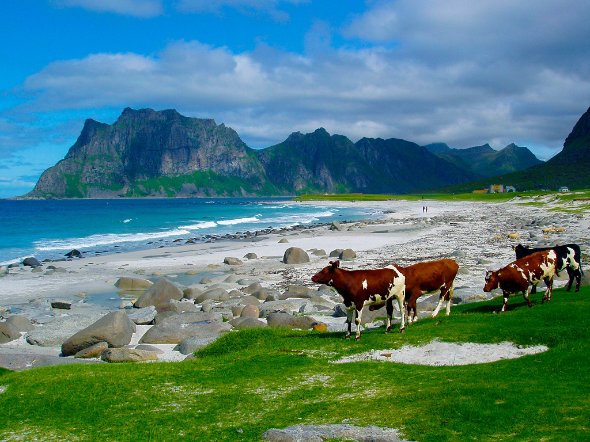

Historikk
Det eneste private slakteriet nord for Saltfjellet.
Slakteriet på Fygle har sakte, men sikkert bygd seg opp til en av hjørnesteinsbedriftene i Vestvågøy, med et moderne anlegg som tilfredsstiller de strenge kravene ved EØS/EU-tilpasning.
For bonden
Dyrevelferd og lokal kjennskap.
Horns Slakteri er en tradisjonsrik, privateid bedrift. Vi tar imot storfe og småfe, og har i tillegg livdyrhandel, nødslakt, leieslakt og produksjon av egne salgsprodukter. Fem egne dyrebiler sørger for trygg inntransport.
Henteområde
Lofoten · Vesterålen · Hamarøy · Salten · Kvæfjord · Skånland · Ofoten · Sør-Troms
Horns Kjøttutsalg
Fra Fygle til
middagsbordet.
I Lofoten finner du et godt utvalg av produktene våre i flere daglivarebutikker. Ferskvare leveres også nasjonalt via de store matkjedene.
- Salt lamSe produkt →
- LammesmåstekSe produkt →
- Salt fleskSe produkt →
- BaconSe produkt →
- Nakke uten svorSe produkt →
- Horns kjøttrullSe produkt →
- Horns sylterullSe produkt →
- TrimmingsSe produkt →
Hele slakt går til Fatland og Kuraas · Medlem av KLF
Animalia · Kuraas · Fatland · KSL · Mattilsynet · KLF